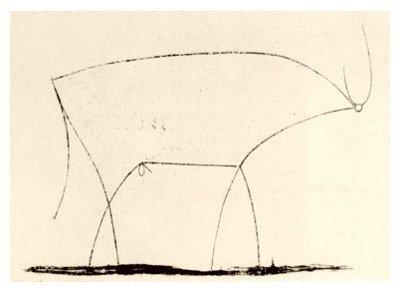

Picasso's bull and Ruby classes
Mar. 29, 2015
Classes in Ruby are a way to define the default values and methods for an object. When thinking about classes, it helps to think of the bare minimum that the object will need.
Let’s say we want to make a series of objects that represent bulls. The differences between individual bulls may vary, but there are a few properties each one will have, and there are a few actions each one will be able to do. When designing a class for bulls, we should think about the most basic qualities of a bull. In the interest of attaching cool images, let’s use Picasso’s 1945 abstract lithograph of a bull.
Picasso’s bull is an exercise in minimalism; years later he noted, "A picture used to be a sum of additions. In my case a picture is a sum of destructions." This drawing is a good example for classes because it shows us the bare minimum of attributes that a bull needs. While it lacks all the details of a particular bull, we know this sketch is a bull because it has a number of characteristics that are found in all bulls. Later on we might add attributes for spots, temperament, or best friends (seriously, cattle have best friends, and they get stressed if they’re separated from their friends), but none of these things are required in all bulls. Thus, when we create a new bull, we should make sure he has all of the following default values without anything extra.
class bull def initialize @horns = 2 @head = 1 @legs = 4 @penis = 1 @tail = 1 end end
Let’s also add a location in order to have our class of bull be able to move. For simplicity’s sake, we’ll keep our bull on an x-axis represented by an integer, which can be changed via the run method.
Finally, let’s add attr_reader in order to allow our code to access the value of each instance variable except for @thoughts, which will be left private and unreadable. It’s safe to assume every bull has thoughts, but we have no way to read his mind.
class bull attr_reader :horns, :head, :legs, :penis, :tail, :location def initialize @horns = 2 @head = 1 @legs = 4 @penis = 1 @tail = 1 end def move(distance) @location += distance end end
Now when we create a bull, he will have the regular attributes of a bull and a location from which he can move. Note how bull1 and bull2 have the same basic attributes (because they’re of the same class), but different locations (because they’re different objects). Also note how each attribute is readable to the program, except for @thoughts, which returns an error.